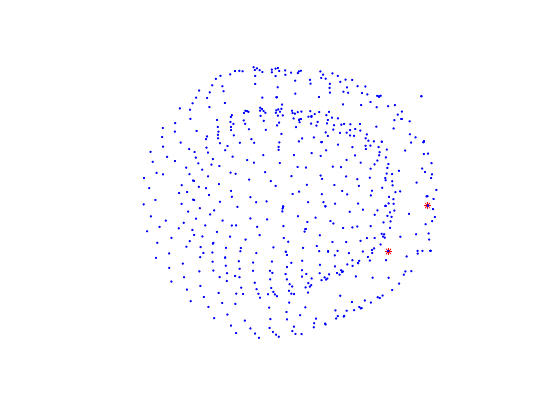
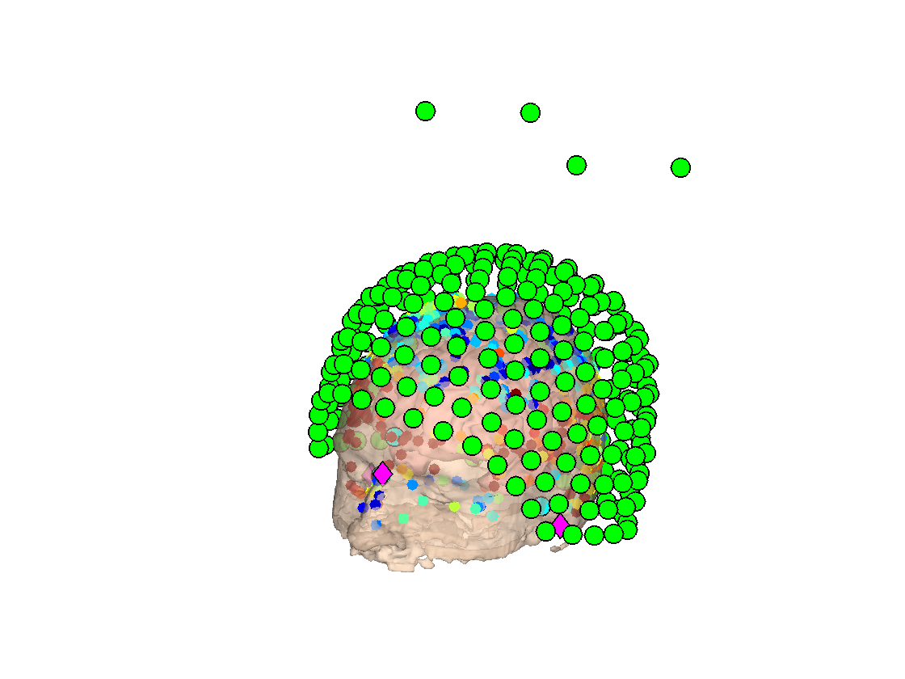

Import - CTF resting state
This example shows how to read in raw data from CTF scanners
Contents
CTF raw data files are contained in a folder with extension .ds. This folder contains a number of binary files. For this example, we will use a recording from the UK MEG dataset gathered at the University of Nottingham
Please note that example data for this practical is not included in the public OSL release as it contains individual structural information
ds_folder = fullfile(osldir,'example_Data','ctf_preprocessing','3006','3006_Eyes_Open_Rest_PROC.ds');
In order to perform a source space analysis, we also need a structural MRI scan for the subject
mri_scan = fullfile(osldir,'example_Data','ctf_preprocessing','3006','3006_CRG.nii.gz');
To begin with, we can read the raw data in at the lowest level using a FieldTrip function
d=ft_read_data(ds_folder); class(d)
ans =
'double'
Note that CTF data may optionally be processed using a synthetic higher- order gradiometer. Some information about this is available here: http://www.fieldtriptoolbox.org/faq/how_does_the_ctf_higher-order_gradiometer_work. This transformation may have already been applied to the data in the .ds folder. By default, FieldTrip will automatically undo this 'balancing' procedure when the data is imported into Matlab. This behaviour can be overriden by disabling this unbalancing in FieldTrip, by overwriting the relevant files. This is done automatically by initialise_spm which is called by osl_startup. If you want to use the original FieldTrip unbalancing, in initialise_spm.m at the top of the file set disable_undobalancing = false. You will need to restart Matlab and restart OSL for this to take effect. Matlab will display a warning whenever the custom unbalancing code is run, so that you are always aware when this occurs.
Without the header information, this data matrix is not very useful. We can read in both the header and the data using ft_preprocessing
Secondly, the continuous data in the .ds folder is actually stored as a series of 10s epochs.
d=ft_preprocessing(struct('dataset',ds_folder))
processing channel { 'UPPT002' 'SCLK01' 'BG1' 'BG2' 'BG3' 'BP1' 'BP2' 'BP3' 'BR1' 'BR2' 'BR3' 'G11' 'G12' 'G13' 'G22' 'G23' 'P11' 'P12' 'P13' 'P23' 'Q11' 'Q12' 'Q13' 'Q22' 'Q23' 'R11' 'R12' 'R13' 'R22' 'R23' 'MLC11' 'MLC12' 'MLC13' 'MLC14' 'MLC15' 'MLC16' 'MLC17' 'MLC21' 'MLC22' 'MLC23' 'MLC24' 'MLC25' 'MLC31' 'MLC32' 'MLC41' 'MLC42' 'MLC51' 'MLC52' 'MLC53' 'MLC54' 'MLC55' 'MLC61' 'MLC62' 'MLC63' 'MLF11' 'MLF12' 'MLF13' 'MLF14' 'MLF21' 'MLF22' 'MLF23' 'MLF24' 'MLF25' 'MLF31' 'MLF32' 'MLF33' 'MLF34' 'MLF35' 'MLF41' 'MLF42' 'MLF43' 'MLF44' 'MLF45' 'MLF46' 'MLF51' 'MLF52' 'MLF53' 'MLF54' 'MLF55' 'MLF56' 'MLF61' 'MLF62' 'MLF63' 'MLF64' 'MLF65' 'MLF66' 'MLF67' 'MLO11' 'MLO12' 'MLO13' 'MLO14' 'MLO21' 'MLO22' 'MLO23' 'MLO24' 'MLO31' 'MLO32' 'MLO33' 'MLO34' 'MLO41' 'MLO42' 'MLO43' 'MLO51' 'MLO52' 'MLO53' 'MLP11' 'MLP12' 'MLP21' 'MLP22' 'MLP23' 'MLP31' 'MLP32' 'MLP33' 'MLP34' 'MLP35' 'MLP41' 'MLP42' 'MLP43' 'MLP44' 'MLP45' 'MLP51' 'MLP52' 'MLP53' 'MLP54' 'MLP55' 'MLP56' 'MLP57' 'MLT11' 'MLT12' 'MLT13' 'MLT14' 'MLT15' 'MLT16' 'MLT21' 'MLT22' 'MLT23' 'MLT24' 'MLT25' 'MLT26' 'MLT27' 'MLT31' 'MLT32' 'MLT33' 'MLT34' 'MLT35' 'MLT36' 'MLT37' 'MLT41' 'MLT42' 'MLT43' 'MLT44' 'MLT45' 'MLT46' 'MLT47' 'MLT51' 'MLT52' 'MLT53' 'MLT54' 'MLT55' 'MLT56' 'MLT57' 'MRC11' 'MRC12' 'MRC13' 'MRC14' 'MRC15' 'MRC16' 'MRC17' 'MRC21' 'MRC22' 'MRC23' 'MRC24' 'MRC25' 'MRC31' 'MRC32' 'MRC41' 'MRC42' 'MRC51' 'MRC52' 'MRC53' 'MRC54' 'MRC55' 'MRC61' 'MRC62' 'MRC63' 'MRF11' 'MRF12' 'MRF13' 'MRF14' 'MRF21' 'MRF22' 'MRF23' 'MRF24' 'MRF25' 'MRF31' 'MRF32' 'MRF33' 'MRF34' 'MRF35' 'MRF41' 'MRF42' 'MRF43' 'MRF44' 'MRF45' 'MRF46' 'MRF51' 'MRF52' 'MRF53' 'MRF54' 'MRF55' 'MRF56' 'MRF61' 'MRF62' 'MRF63' 'MRF64' 'MRF65' 'MRF66' 'MRF67' 'MRO11' 'MRO12' 'MRO13' 'MRO14' 'MRO21' 'MRO22' 'MRO23' 'MRO24' 'MRO31' 'MRO32' 'MRO33' 'MRO34' 'MRO41' 'MRO42' 'MRO43' 'MRO44' 'MRO51' 'MRO52' 'MRO53' 'MRP11' 'MRP12' 'MRP21' 'MRP22' 'MRP23' 'MRP31' 'MRP32' 'MRP33' 'MRP34' 'MRP35' 'MRP41' 'MRP42' 'MRP43' 'MRP44' 'MRP45' 'MRP51' 'MRP52' 'MRP53' 'MRP54' 'MRP55' 'MRP56' 'MRP57' 'MRT11' 'MRT12' 'MRT13' 'MRT14' 'MRT15' 'MRT16' 'MRT21' 'MRT22' 'MRT23' 'MRT24' 'MRT25' 'MRT26' 'MRT27' 'MRT31' 'MRT32' 'MRT33' 'MRT34' 'MRT35' 'MRT36' 'MRT37' 'MRT41' 'MRT42' 'MRT43' 'MRT44' 'MRT45' 'MRT46' 'MRT47' 'MRT51' 'MRT52' 'MRT53' 'MRT54' 'MRT55' 'MRT56' 'MRT57' 'MZC01' 'MZC02' 'MZC03' 'MZC04' 'MZF01' 'MZF02' 'MZF03' 'MZO01' 'MZO02' 'MZO03' 'MZP01' 'EEG001' 'EEG002' 'EEG003' 'EEG004' 'EEG005' 'EEG006' 'EEG007' 'EEG008' 'EEG009' 'EEG010' 'EEG011' 'EEG012' 'EEG013' 'EEG014' 'EEG015' 'EEG016' 'EEG017' 'EEG018' 'EEG019' 'EEG020' 'EEG021' 'EEG022' 'EEG023' 'EEG024' 'EEG025' 'EEG026' 'EEG027' 'EEG028' 'EEG029' 'EEG030' 'EEG031' 'EEG032' 'EEG033' 'EEG034' 'EEG035' 'EEG036' 'EEG037' 'EEG038' 'EEG039' 'EEG040' 'EEG041' 'EEG042' 'EEG043' 'EEG044' 'EEG045' 'EEG046' 'EEG047' 'EEG048' 'EEG049' 'EEG050' 'EEG051' 'EEG052' 'EEG053' 'EEG054' 'EEG055' 'EEG056' 'EEG057' 'EEG058' 'EEG059' 'EEG060' 'EEG061' 'EEG062' 'EEG063' 'EEG064' 'HADC001' 'HADC002' 'HADC003' 'HDAC001' 'HDAC002' 'HDAC003' 'UADC001' 'HLC0011' 'HLC0012' 'HLC0013' 'HLC0021' 'HLC0022' 'HLC0023' 'HLC0031' 'HLC0032' 'HLC0033' 'HLC0018' 'HLC0028' 'HLC0038' 'HLC0014' 'HLC0015' 'HLC0016' 'HLC0017' 'HLC0024' 'HLC0025' 'HLC0026' 'HLC0027' 'HLC0034' 'HLC0035' 'HLC0036' 'HLC0037' }
reading and preprocessing
reading and preprocessing trial 30 from 30
the call to "ft_preprocessing" took 3 seconds and required the additional allocation of an estimated NaN MB
d =
struct with fields:
hdr: [1×1 struct]
label: {399×1 cell}
time: {1×30 cell}
trial: {1×30 cell}
fsample: 600
sampleinfo: [30×2 double]
grad: [1×1 struct]
cfg: [1×1 struct]
Notice that even though we have a continous resting state recording, it has been stored as a sequence of trials. Each of these trials is 10s in duration, which is typical for CTF resting state recordings. If you know that you have continuous data you can automatically have these epochs stictched together
d=ft_preprocessing(struct('dataset',ds_folder,'continuous','yes'))
processing channel { 'UPPT002' 'SCLK01' 'BG1' 'BG2' 'BG3' 'BP1' 'BP2' 'BP3' 'BR1' 'BR2' 'BR3' 'G11' 'G12' 'G13' 'G22' 'G23' 'P11' 'P12' 'P13' 'P23' 'Q11' 'Q12' 'Q13' 'Q22' 'Q23' 'R11' 'R12' 'R13' 'R22' 'R23' 'MLC11' 'MLC12' 'MLC13' 'MLC14' 'MLC15' 'MLC16' 'MLC17' 'MLC21' 'MLC22' 'MLC23' 'MLC24' 'MLC25' 'MLC31' 'MLC32' 'MLC41' 'MLC42' 'MLC51' 'MLC52' 'MLC53' 'MLC54' 'MLC55' 'MLC61' 'MLC62' 'MLC63' 'MLF11' 'MLF12' 'MLF13' 'MLF14' 'MLF21' 'MLF22' 'MLF23' 'MLF24' 'MLF25' 'MLF31' 'MLF32' 'MLF33' 'MLF34' 'MLF35' 'MLF41' 'MLF42' 'MLF43' 'MLF44' 'MLF45' 'MLF46' 'MLF51' 'MLF52' 'MLF53' 'MLF54' 'MLF55' 'MLF56' 'MLF61' 'MLF62' 'MLF63' 'MLF64' 'MLF65' 'MLF66' 'MLF67' 'MLO11' 'MLO12' 'MLO13' 'MLO14' 'MLO21' 'MLO22' 'MLO23' 'MLO24' 'MLO31' 'MLO32' 'MLO33' 'MLO34' 'MLO41' 'MLO42' 'MLO43' 'MLO51' 'MLO52' 'MLO53' 'MLP11' 'MLP12' 'MLP21' 'MLP22' 'MLP23' 'MLP31' 'MLP32' 'MLP33' 'MLP34' 'MLP35' 'MLP41' 'MLP42' 'MLP43' 'MLP44' 'MLP45' 'MLP51' 'MLP52' 'MLP53' 'MLP54' 'MLP55' 'MLP56' 'MLP57' 'MLT11' 'MLT12' 'MLT13' 'MLT14' 'MLT15' 'MLT16' 'MLT21' 'MLT22' 'MLT23' 'MLT24' 'MLT25' 'MLT26' 'MLT27' 'MLT31' 'MLT32' 'MLT33' 'MLT34' 'MLT35' 'MLT36' 'MLT37' 'MLT41' 'MLT42' 'MLT43' 'MLT44' 'MLT45' 'MLT46' 'MLT47' 'MLT51' 'MLT52' 'MLT53' 'MLT54' 'MLT55' 'MLT56' 'MLT57' 'MRC11' 'MRC12' 'MRC13' 'MRC14' 'MRC15' 'MRC16' 'MRC17' 'MRC21' 'MRC22' 'MRC23' 'MRC24' 'MRC25' 'MRC31' 'MRC32' 'MRC41' 'MRC42' 'MRC51' 'MRC52' 'MRC53' 'MRC54' 'MRC55' 'MRC61' 'MRC62' 'MRC63' 'MRF11' 'MRF12' 'MRF13' 'MRF14' 'MRF21' 'MRF22' 'MRF23' 'MRF24' 'MRF25' 'MRF31' 'MRF32' 'MRF33' 'MRF34' 'MRF35' 'MRF41' 'MRF42' 'MRF43' 'MRF44' 'MRF45' 'MRF46' 'MRF51' 'MRF52' 'MRF53' 'MRF54' 'MRF55' 'MRF56' 'MRF61' 'MRF62' 'MRF63' 'MRF64' 'MRF65' 'MRF66' 'MRF67' 'MRO11' 'MRO12' 'MRO13' 'MRO14' 'MRO21' 'MRO22' 'MRO23' 'MRO24' 'MRO31' 'MRO32' 'MRO33' 'MRO34' 'MRO41' 'MRO42' 'MRO43' 'MRO44' 'MRO51' 'MRO52' 'MRO53' 'MRP11' 'MRP12' 'MRP21' 'MRP22' 'MRP23' 'MRP31' 'MRP32' 'MRP33' 'MRP34' 'MRP35' 'MRP41' 'MRP42' 'MRP43' 'MRP44' 'MRP45' 'MRP51' 'MRP52' 'MRP53' 'MRP54' 'MRP55' 'MRP56' 'MRP57' 'MRT11' 'MRT12' 'MRT13' 'MRT14' 'MRT15' 'MRT16' 'MRT21' 'MRT22' 'MRT23' 'MRT24' 'MRT25' 'MRT26' 'MRT27' 'MRT31' 'MRT32' 'MRT33' 'MRT34' 'MRT35' 'MRT36' 'MRT37' 'MRT41' 'MRT42' 'MRT43' 'MRT44' 'MRT45' 'MRT46' 'MRT47' 'MRT51' 'MRT52' 'MRT53' 'MRT54' 'MRT55' 'MRT56' 'MRT57' 'MZC01' 'MZC02' 'MZC03' 'MZC04' 'MZF01' 'MZF02' 'MZF03' 'MZO01' 'MZO02' 'MZO03' 'MZP01' 'EEG001' 'EEG002' 'EEG003' 'EEG004' 'EEG005' 'EEG006' 'EEG007' 'EEG008' 'EEG009' 'EEG010' 'EEG011' 'EEG012' 'EEG013' 'EEG014' 'EEG015' 'EEG016' 'EEG017' 'EEG018' 'EEG019' 'EEG020' 'EEG021' 'EEG022' 'EEG023' 'EEG024' 'EEG025' 'EEG026' 'EEG027' 'EEG028' 'EEG029' 'EEG030' 'EEG031' 'EEG032' 'EEG033' 'EEG034' 'EEG035' 'EEG036' 'EEG037' 'EEG038' 'EEG039' 'EEG040' 'EEG041' 'EEG042' 'EEG043' 'EEG044' 'EEG045' 'EEG046' 'EEG047' 'EEG048' 'EEG049' 'EEG050' 'EEG051' 'EEG052' 'EEG053' 'EEG054' 'EEG055' 'EEG056' 'EEG057' 'EEG058' 'EEG059' 'EEG060' 'EEG061' 'EEG062' 'EEG063' 'EEG064' 'HADC001' 'HADC002' 'HADC003' 'HDAC001' 'HDAC002' 'HDAC003' 'UADC001' 'HLC0011' 'HLC0012' 'HLC0013' 'HLC0021' 'HLC0022' 'HLC0023' 'HLC0031' 'HLC0032' 'HLC0033' 'HLC0018' 'HLC0028' 'HLC0038' 'HLC0014' 'HLC0015' 'HLC0016' 'HLC0017' 'HLC0024' 'HLC0025' 'HLC0026' 'HLC0027' 'HLC0034' 'HLC0035' 'HLC0036' 'HLC0037' }
reading and preprocessing
reading and preprocessing trial 1 from 1
the call to "ft_preprocessing" took 3 seconds and required the additional allocation of an estimated NaN MB
d =
struct with fields:
hdr: [1×1 struct]
label: {399×1 cell}
time: {[1×180000 double]}
trial: {[399×180000 double]}
fsample: 600
sampleinfo: [1 180000]
grad: [1×1 struct]
cfg: [1×1 struct]
Although the above commands will read the data into Matlab, for OSL it is more useful to read the data into an SPM MEEG object. This can be performed using the osl_import function. The .ds file is passed in as the first input and you can optionally provide a filename for the MEEG object that will be created on disk. After conversion, the MEEG object is automatically loaded and returned
spm_file = fullfile(osldir,'example_Data','ctf_preprocessing','3006','3006'); D = osl_import(ds_folder,'outfile',spm_file)
SPM12: spm_eeg_convert_4osl (v6190) 16:14:51 - 21/11/2017
========================================================================
SPM12: spm_eeg_convert_4osl (v6190) 16:14:51 - 21/11/2017
========================================================================
Data type is missing or incorrect, assigning default.
creating layout from cfg.grad
creating layout for ctf275 system
Data type is missing or incorrect, assigning default.
creating layout from cfg.grad
creating layout for ctf275 system
No EOG channels were automatically identified - you may need to specify them manually with D=D.chantype(XXX,'EOG') if you wish to use them e.g. in AFRICA
No ECG channels were automatically identified - you may need to specify them manually with D=D.chantype(XXX,'ECG') if you wish to use them e.g. in AFRICA
SPM M/EEG data object
Type: continuous
Transform: time
1 conditions
276 channels
180000 samples/trial
1 trials
Sampling frequency: 600 Hz
Loaded from file /Users/romesh/oxford_postdoc/toolboxes/osl/example_Data/ctf_preprocessing/3006/3006.mat
Use the syntax D(channels, samples, trials) to access the data
Type "methods('meeg')" for the list of methods performing other operations with the object
Type "help meeg/method_name" to get help about methods
By default, only data channels (e.g. MEG, trigger, clock) will be imported. You can optionally specify other channels to retain in the conversion. There are two possibilities
- artefact_channels - these channels will be retained based on their chantype e.g. EMG
- other_channels - these channels will be retained based on their chanlabel e.g. EEG060
In this case, we have been told by our collaborators that the following additional channels were recorded
- EEG060 - EMG
- EEG059 - ECG
- EEG057 - EOG1
- EEG058 - EOG2
First, we need to make sure these channels are retained in the import. These channels are identified by their label, so we will use other_channels
D = osl_import(ds_folder,'outfile',spm_file,'other_channels',{'EEG060','EEG059','EEG057','EEG058'})
SPM12: spm_eeg_convert_4osl (v6190) 16:15:00 - 21/11/2017
========================================================================
SPM12: spm_eeg_convert_4osl (v6190) 16:15:00 - 21/11/2017
========================================================================
Data type is missing or incorrect, assigning default.
creating layout from cfg.grad
creating layout for ctf275 system
Data type is missing or incorrect, assigning default.
creating layout from cfg.grad
creating layout for ctf275 system
No EOG channels were automatically identified - you may need to specify them manually with D=D.chantype(XXX,'EOG') if you wish to use them e.g. in AFRICA
No ECG channels were automatically identified - you may need to specify them manually with D=D.chantype(XXX,'ECG') if you wish to use them e.g. in AFRICA
SPM M/EEG data object
Type: continuous
Transform: time
1 conditions
280 channels
180000 samples/trial
1 trials
Sampling frequency: 600 Hz
Loaded from file /Users/romesh/oxford_postdoc/toolboxes/osl/example_Data/ctf_preprocessing/3006/3006.mat
Use the syntax D(channels, samples, trials) to access the data
Type "methods('meeg')" for the list of methods performing other operations with the object
Type "help meeg/method_name" to get help about methods
Notice that we now have 280 channels instead of 276, because these 4 channels have now been retained. For convenience and data integrity, we should now also take the opportunity to set the channel type in the MEEG object so that these channels can be readily identified further on in the analysis
D = D.chantype(find(strcmp(D.chanlabels,'EEG060')),'EMG'); D = D.chantype(find(strcmp(D.chanlabels,'EEG059')),'ECG'); D = D.chantype(find(strcmp(D.chanlabels,'EEG057')),'EOG'); D = D.chantype(find(strcmp(D.chanlabels,'EEG058')),'EOG'); D = D.chanlabels(find(strcmp(D.chanlabels,'EEG060')),'EMG'); D = D.chanlabels(find(strcmp(D.chanlabels,'EEG059')),'ECG'); D = D.chanlabels(find(strcmp(D.chanlabels,'EEG057')),'EOG1'); D = D.chanlabels(find(strcmp(D.chanlabels,'EEG058')),'EOG2');
In order to perform coregistration, in addition to the structural MRI scan, we also need headshape points. These are often stored in .pos files. You can read these in using the ft_read_headshape() function
pos_file = fullfile(osldir,'example_Data','ctf_preprocessing','3006','3006.pos'); ft_read_headshape(pos_file)
ans =
struct with fields:
pos: [560×3 double]
fid: [1×1 struct]
unit: 'cm'
This struct can be passed straight into the MEEG's fiducials method to store it within the SPM object
D = D.fiducials(ft_read_headshape(pos_file,'unit','mm')); D.fiducials
ans =
struct with fields:
fid: [1×1 struct]
unit: 'mm'
pnt: [560×3 double]
Note that the headshape points MUST be read in units of 'mm', because this is assumed by RHINO later on in the pipeline
Don't forget to save your updated channel types and fiducials to disk!
D.save()
SPM M/EEG data object
Type: continuous
Transform: time
1 conditions
280 channels
180000 samples/trial
1 trials
Sampling frequency: 600 Hz
Loaded from file /Users/romesh/oxford_postdoc/toolboxes/osl/example_Data/ctf_preprocessing/3006/3006.mat
Use the syntax D(channels, samples, trials) to access the data
Type "methods('meeg')" for the list of methods performing other operations with the object
Type "help meeg/method_name" to get help about methods
Coregistration
Finally, we will need to perform the coregistration and forward model computation in order to be able to later do a source space analysis. To do this, we will use the osl_headmodel function. This function takes in the MEEG object, the structural scan, and some additional options including which forward model you would like to use (you can always run osl_forward_model again later if you want to change the forward model without changing the coregistration)
S = struct;
S.D = D.fullfile;
S.mri = mri_scan;
S.useheadshape = true;
S.forward_meg = 'MEG Local Spheres';
S.use_rhino = true;
You can refer to the coregistration example on this site for more information about RHINO and other coregistration options.
Note that the MEEG object must be passed in a filename. So you need to make sure that you have commited any pending changes to disk (by running D.save()) before using osl_headmodel. Lastly, you might need to rename your fiducials, depending on what their labels are in the .pos file. You can check what the labels are by looking at D.fiducials:
D.fiducials.fid.label
ans =
3×1 cell array
'lpa'
'nas'
'rpa'
And then you should set these labels - notice for example that the 'nasion' point has been imported as 'nas'
S.fid.label.nasion='nas'; S.fid.label.lpa='lpa'; S.fid.label.rpa='rpa';
We can then go ahead and run osl_headmodel to do the coregistration and forward model.
osl_headmodel(S);
*** RUNNING RHINO COREGISTRATION ***
Running FLIRT...
Running BET...
Running BETSURF...
Running scalp extraction
Computing SPM meshes
SPM12: spm_preproc_run (v6365) 16:17:20 - 21/11/2017
========================================================================
Segment <a href="matlab:spm_image('display','/Users/romesh/oxford_postdoc/toolboxes/osl/example_Data/ctf_preprocessing/3006/rhino_3006_CRG.nii');">/Users/romesh/oxford_postdoc/toolboxes/osl/example_Data/ctf_preprocessing/3006/rhino_3006_CRG.nii</a>
Completed : 16:21:00 - 21/11/2017
Coregistering
*** RHINO COREGISTRATION COMPLETE ***
the input is mesh data with 2562 vertices and 5120 triangles
single sphere, 2562 surface points, center = [ 0.0 -0.0 0.0], radius = 0.1
channel = MLC11, 337 surface points, center = [ 0.0 -0.0 0.0], radius = 0.1
channel = MLC12, 334 surface points, center = [ 0.0 -0.0 0.0], radius = 0.1
channel = MLC13, 319 surface points, center = [-0.0 -0.0 0.0], radius = 0.1
channel = MLC14, 314 surface points, center = [-0.0 -0.0 0.0], radius = 0.1
channel = MLC15, 319 surface points, center = [-0.0 -0.0 0.0], radius = 0.1
channel = MLC16, 324 surface points, center = [-0.0 -0.0 0.0], radius = 0.1
channel = MLC17, 348 surface points, center = [-0.0 -0.0 0.0], radius = 0.1
channel = MLC21, 342 surface points, center = [-0.0 -0.0 0.0], radius = 0.1
channel = MLC22, 326 surface points, center = [-0.0 -0.0 0.0], radius = 0.1
channel = MLC23, 319 surface points, center = [-0.0 -0.0 0.0], radius = 0.1
channel = MLC24, 308 surface points, center = [-0.0 -0.0 0.0], radius = 0.1
channel = MLC25, 319 surface points, center = [-0.0 -0.0 0.0], radius = 0.1
channel = MLC31, 315 surface points, center = [-0.0 -0.0 0.0], radius = 0.1
channel = MLC32, 295 surface points, center = [-0.0 -0.0 0.0], radius = 0.1
channel = MLC41, 331 surface points, center = [-0.0 -0.0 0.0], radius = 0.1
channel = MLC42, 306 surface points, center = [-0.0 -0.0 0.0], radius = 0.1
channel = MLC51, 354 surface points, center = [-0.0 -0.0 0.0], radius = 0.1
channel = MLC52, 343 surface points, center = [-0.0 -0.0 0.0], radius = 0.1
channel = MLC53, 317 surface points, center = [-0.0 -0.0 0.0], radius = 0.1
channel = MLC54, 314 surface points, center = [-0.0 -0.0 0.1], radius = 0.1
channel = MLC55, 307 surface points, center = [-0.0 -0.0 0.1], radius = 0.1
channel = MLC61, 327 surface points, center = [-0.0 -0.0 0.0], radius = 0.1
channel = MLC62, 313 surface points, center = [-0.0 -0.0 0.0], radius = 0.1
channel = MLC63, 308 surface points, center = [-0.0 -0.0 0.1], radius = 0.1
channel = MLF11, 330 surface points, center = [ 0.0 -0.0 0.0], radius = 0.1
channel = MLF12, 336 surface points, center = [ 0.0 -0.0 0.0], radius = 0.1
channel = MLF13, 337 surface points, center = [ 0.0 -0.0 0.0], radius = 0.1
channel = MLF14, 341 surface points, center = [ 0.0 -0.0 0.0], radius = 0.1
channel = MLF21, 326 surface points, center = [ 0.0 -0.0 0.0], radius = 0.1
channel = MLF22, 322 surface points, center = [ 0.0 -0.0 0.0], radius = 0.1
channel = MLF23, 315 surface points, center = [ 0.0 -0.0 0.0], radius = 0.1
channel = MLF24, 327 surface points, center = [ 0.0 -0.0 0.0], radius = 0.1
channel = MLF25, 353 surface points, center = [ 0.0 -0.0 0.0], radius = 0.1
channel = MLF31, 308 surface points, center = [ 0.0 -0.0 0.0], radius = 0.1
channel = MLF32, 307 surface points, center = [ 0.0 -0.0 0.0], radius = 0.1
channel = MLF33, 307 surface points, center = [ 0.0 -0.0 0.0], radius = 0.1
channel = MLF34, 323 surface points, center = [ 0.0 -0.0 0.0], radius = 0.1
channel = MLF35, 349 surface points, center = [ 0.0 -0.0 0.0], radius = 0.1
channel = MLF41, 309 surface points, center = [ 0.0 -0.0 0.0], radius = 0.1
channel = MLF42, 298 surface points, center = [ 0.0 -0.0 0.0], radius = 0.1
channel = MLF43, 294 surface points, center = [ 0.0 -0.0 0.0], radius = 0.1
channel = MLF44, 297 surface points, center = [ 0.0 -0.0 0.0], radius = 0.1
channel = MLF45, 321 surface points, center = [ 0.0 -0.0 0.0], radius = 0.1
channel = MLF46, 354 surface points, center = [-0.0 -0.0 0.0], radius = 0.1
channel = MLF51, 301 surface points, center = [ 0.0 -0.0 0.0], radius = 0.1
channel = MLF52, 296 surface points, center = [ 0.0 -0.0 0.0], radius = 0.1
channel = MLF53, 295 surface points, center = [ 0.0 -0.0 0.0], radius = 0.1
channel = MLF54, 308 surface points, center = [ 0.0 -0.0 0.0], radius = 0.1
channel = MLF55, 327 surface points, center = [ 0.0 -0.0 0.0], radius = 0.1
channel = MLF56, 349 surface points, center = [-0.0 -0.0 0.0], radius = 0.1
channel = MLF61, 317 surface points, center = [ 0.0 -0.0 0.0], radius = 0.1
channel = MLF62, 309 surface points, center = [ 0.0 -0.0 0.0], radius = 0.1
channel = MLF63, 305 surface points, center = [ 0.0 -0.0 0.0], radius = 0.1
channel = MLF64, 311 surface points, center = [ 0.0 -0.0 0.0], radius = 0.1
channel = MLF65, 318 surface points, center = [-0.0 -0.0 0.0], radius = 0.1
channel = MLF66, 346 surface points, center = [-0.0 -0.0 0.0], radius = 0.1
channel = MLF67, 375 surface points, center = [-0.0 -0.0 0.0], radius = 0.1
channel = MLO11, 434 surface points, center = [-0.0 -0.0 0.0], radius = 0.1
channel = MLO12, 430 surface points, center = [-0.0 -0.0 0.0], radius = 0.1
channel = MLO13, 399 surface points, center = [-0.0 -0.0 0.0], radius = 0.1
channel = MLO14, 386 surface points, center = [-0.0 -0.0 0.0], radius = 0.1
channel = MLO21, 452 surface points, center = [-0.0 -0.0 0.0], radius = 0.1
channel = MLO22, 448 surface points, center = [-0.0 -0.0 0.0], radius = 0.1
channel = MLO23, 421 surface points, center = [-0.0 -0.0 0.0], radius = 0.1
channel = MLO24, 411 surface points, center = [-0.0 -0.0 0.0], radius = 0.1
channel = MLO31, 457 surface points, center = [-0.0 -0.0 0.0], radius = 0.1
channel = MLO32, 432 surface points, center = [-0.0 -0.0 0.0], radius = 0.1
channel = MLO33, 422 surface points, center = [-0.0 -0.0 0.0], radius = 0.1
channel = MLO34, 417 surface points, center = [-0.0 -0.0 0.0], radius = 0.1
channel = MLO41, 453 surface points, center = [-0.0 -0.0 0.0], radius = 0.1
channel = MLO42, 421 surface points, center = [-0.0 -0.0 0.0], radius = 0.1
channel = MLO43, 403 surface points, center = [-0.0 -0.0 0.0], radius = 0.1
channel = MLO51, 395 surface points, center = [-0.0 0.0 0.0], radius = 0.1
channel = MLO52, 374 surface points, center = [-0.0 0.0 0.0], radius = 0.1
channel = MLO53, 362 surface points, center = [-0.0 0.0 0.0], radius = 0.1
channel = MLP11, 331 surface points, center = [-0.0 -0.0 0.1], radius = 0.1
channel = MLP12, 293 surface points, center = [-0.0 -0.0 0.1], radius = 0.1
channel = MLP21, 357 surface points, center = [-0.0 -0.0 0.1], radius = 0.1
channel = MLP22, 313 surface points, center = [-0.0 -0.0 0.1], radius = 0.1
channel = MLP23, 303 surface points, center = [-0.0 -0.0 0.1], radius = 0.1
channel = MLP31, 384 surface points, center = [-0.0 -0.0 0.1], radius = 0.1
channel = MLP32, 351 surface points, center = [-0.0 -0.0 0.1], radius = 0.1
channel = MLP33, 307 surface points, center = [-0.0 -0.0 0.1], radius = 0.1
channel = MLP34, 304 surface points, center = [-0.0 -0.0 0.1], radius = 0.1
channel = MLP35, 308 surface points, center = [-0.0 -0.0 0.0], radius = 0.1
channel = MLP41, 378 surface points, center = [-0.0 -0.0 0.0], radius = 0.1
channel = MLP42, 347 surface points, center = [-0.0 -0.0 0.0], radius = 0.1
channel = MLP43, 323 surface points, center = [-0.0 -0.0 0.0], radius = 0.1
channel = MLP44, 330 surface points, center = [-0.0 -0.0 0.0], radius = 0.1
channel = MLP45, 334 surface points, center = [-0.0 -0.0 0.0], radius = 0.1
channel = MLP51, 417 surface points, center = [-0.0 -0.0 0.0], radius = 0.1
channel = MLP52, 411 surface points, center = [-0.0 -0.0 0.0], radius = 0.1
channel = MLP53, 391 surface points, center = [-0.0 -0.0 0.0], radius = 0.1
channel = MLP54, 361 surface points, center = [-0.0 -0.0 0.0], radius = 0.1
channel = MLP55, 352 surface points, center = [-0.0 -0.0 0.0], radius = 0.1
channel = MLP56, 354 surface points, center = [-0.0 -0.0 0.0], radius = 0.1
channel = MLP57, 366 surface points, center = [-0.0 -0.0 0.0], radius = 0.1
channel = MLT11, 377 surface points, center = [-0.0 -0.1 0.0], radius = 0.1
channel = MLT12, 376 surface points, center = [-0.0 -0.1 0.0], radius = 0.1
channel = MLT13, 383 surface points, center = [-0.0 -0.1 0.0], radius = 0.1
channel = MLT14, 378 surface points, center = [-0.0 -0.0 0.0], radius = 0.1
channel = MLT15, 357 surface points, center = [-0.0 -0.0 0.0], radius = 0.1
channel = MLT16, 375 surface points, center = [-0.0 -0.0 0.0], radius = 0.1
channel = MLT21, 372 surface points, center = [ 0.0 -0.0 0.0], radius = 0.1
channel = MLT22, 387 surface points, center = [-0.0 -0.1 0.0], radius = 0.1
channel = MLT23, 380 surface points, center = [-0.0 -0.1 0.0], radius = 0.1
channel = MLT24, 366 surface points, center = [-0.0 -0.1 0.0], radius = 0.1
channel = MLT25, 350 surface points, center = [-0.0 -0.0 0.0], radius = 0.1
channel = MLT26, 360 surface points, center = [-0.0 -0.0 0.0], radius = 0.1
channel = MLT27, 407 surface points, center = [-0.0 -0.0 0.0], radius = 0.1
channel = MLT31, 350 surface points, center = [ 0.0 -0.0 0.0], radius = 0.1
channel = MLT32, 370 surface points, center = [ 0.0 -0.0 0.0], radius = 0.1
channel = MLT33, 354 surface points, center = [ 0.0 -0.1 0.0], radius = 0.1
channel = MLT34, 345 surface points, center = [-0.0 -0.1 0.0], radius = 0.1
channel = MLT35, 344 surface points, center = [-0.0 -0.0 0.0], radius = 0.1
channel = MLT36, 345 surface points, center = [-0.0 -0.0 0.0], radius = 0.1
channel = MLT37, 388 surface points, center = [-0.0 -0.0 0.0], radius = 0.1
channel = MLT41, 333 surface points, center = [ 0.0 -0.0 0.0], radius = 0.1
channel = MLT42, 345 surface points, center = [ 0.0 -0.0 0.0], radius = 0.1
channel = MLT43, 313 surface points, center = [ 0.0 -0.0 0.0], radius = 0.1
channel = MLT44, 320 surface points, center = [-0.0 -0.0 0.0], radius = 0.1
channel = MLT45, 314 surface points, center = [-0.0 -0.0 0.0], radius = 0.1
channel = MLT46, 334 surface points, center = [-0.0 -0.0 0.0], radius = 0.1
channel = MLT47, 395 surface points, center = [-0.0 -0.0 0.0], radius = 0.1
channel = MLT51, 294 surface points, center = [ 0.0 -0.0 0.0], radius = 0.1
channel = MLT52, 282 surface points, center = [ 0.0 -0.0 0.0], radius = 0.1
channel = MLT53, 281 surface points, center = [-0.0 -0.0 0.0], radius = 0.1
channel = MLT54, 276 surface points, center = [-0.0 -0.0 0.0], radius = 0.1
channel = MLT55, 289 surface points, center = [-0.0 -0.0 0.0], radius = 0.1
channel = MLT56, 334 surface points, center = [-0.0 0.0 0.0], radius = 0.1
channel = MLT57, 357 surface points, center = [-0.0 0.0 0.0], radius = 0.1
channel = MRC11, 353 surface points, center = [ 0.0 -0.0 0.0], radius = 0.1
channel = MRC12, 359 surface points, center = [ 0.0 -0.0 0.0], radius = 0.1
channel = MRC13, 355 surface points, center = [ 0.0 0.0 0.0], radius = 0.1
channel = MRC14, 366 surface points, center = [ 0.0 0.0 0.0], radius = 0.1
channel = MRC15, 373 surface points, center = [-0.0 0.0 0.0], radius = 0.1
channel = MRC16, 374 surface points, center = [-0.0 0.0 0.0], radius = 0.1
channel = MRC17, 407 surface points, center = [-0.0 0.0 0.0], radius = 0.1
channel = MRC21, 351 surface points, center = [ 0.0 -0.0 0.0], radius = 0.1
channel = MRC22, 348 surface points, center = [ 0.0 0.0 0.0], radius = 0.1
channel = MRC23, 354 surface points, center = [-0.0 0.0 0.0], radius = 0.1
channel = MRC24, 363 surface points, center = [-0.0 0.0 0.0], radius = 0.1
channel = MRC25, 374 surface points, center = [-0.0 0.0 0.0], radius = 0.1
channel = MRC31, 334 surface points, center = [-0.0 0.0 0.0], radius = 0.1
channel = MRC32, 340 surface points, center = [-0.0 0.0 0.0], radius = 0.1
channel = MRC41, 335 surface points, center = [-0.0 0.0 0.0], radius = 0.1
channel = MRC42, 316 surface points, center = [-0.0 0.0 0.1], radius = 0.1
channel = MRC51, 351 surface points, center = [ 0.0 -0.0 0.0], radius = 0.1
channel = MRC52, 334 surface points, center = [-0.0 -0.0 0.0], radius = 0.1
channel = MRC53, 317 surface points, center = [-0.0 0.0 0.0], radius = 0.1
channel = MRC54, 306 surface points, center = [-0.0 -0.0 0.1], radius = 0.1
channel = MRC55, 311 surface points, center = [-0.0 -0.0 0.1], radius = 0.1
channel = MRC61, 328 surface points, center = [-0.0 -0.0 0.0], radius = 0.1
channel = MRC62, 308 surface points, center = [-0.0 -0.0 0.1], radius = 0.1
channel = MRC63, 301 surface points, center = [-0.0 -0.0 0.1], radius = 0.1
channel = MRF11, 348 surface points, center = [ 0.0 -0.0 0.0], radius = 0.1
channel = MRF12, 352 surface points, center = [ 0.0 -0.0 0.0], radius = 0.1
channel = MRF13, 356 surface points, center = [ 0.0 0.0 0.0], radius = 0.1
channel = MRF14, 381 surface points, center = [ 0.0 0.0 0.0], radius = 0.1
channel = MRF21, 328 surface points, center = [ 0.0 -0.0 0.0], radius = 0.1
channel = MRF22, 332 surface points, center = [ 0.0 -0.0 0.0], radius = 0.1
channel = MRF23, 334 surface points, center = [ 0.0 0.0 0.0], radius = 0.1
channel = MRF24, 360 surface points, center = [ 0.0 0.0 0.0], radius = 0.1
channel = MRF25, 396 surface points, center = [ 0.0 0.0 0.0], radius = 0.1
channel = MRF31, 319 surface points, center = [ 0.0 -0.0 0.0], radius = 0.1
channel = MRF32, 319 surface points, center = [ 0.0 0.0 0.0], radius = 0.1
channel = MRF33, 335 surface points, center = [ 0.0 0.0 0.0], radius = 0.1
channel = MRF34, 366 surface points, center = [ 0.0 0.0 0.0], radius = 0.1
channel = MRF35, 413 surface points, center = [ 0.0 0.0 0.0], radius = 0.1
channel = MRF41, 318 surface points, center = [ 0.0 -0.0 0.0], radius = 0.1
channel = MRF42, 310 surface points, center = [ 0.0 -0.0 0.0], radius = 0.1
channel = MRF43, 325 surface points, center = [ 0.0 0.0 0.0], radius = 0.1
channel = MRF44, 339 surface points, center = [ 0.0 0.0 0.0], radius = 0.1
channel = MRF45, 378 surface points, center = [ 0.0 0.0 0.0], radius = 0.1
channel = MRF46, 427 surface points, center = [ 0.0 0.0 0.0], radius = 0.1
channel = MRF51, 314 surface points, center = [ 0.0 -0.0 0.0], radius = 0.1
channel = MRF52, 318 surface points, center = [ 0.0 0.0 0.0], radius = 0.1
channel = MRF53, 333 surface points, center = [ 0.0 0.0 0.0], radius = 0.1
channel = MRF54, 358 surface points, center = [ 0.0 0.0 0.0], radius = 0.1
channel = MRF55, 394 surface points, center = [ 0.0 0.0 0.0], radius = 0.1
channel = MRF56, 422 surface points, center = [ 0.0 0.0 0.0], radius = 0.1
channel = MRF61, 335 surface points, center = [ 0.0 -0.0 0.0], radius = 0.1
channel = MRF62, 339 surface points, center = [ 0.0 0.0 0.0], radius = 0.1
channel = MRF63, 355 surface points, center = [ 0.0 0.0 0.0], radius = 0.1
channel = MRF64, 382 surface points, center = [ 0.0 0.0 0.0], radius = 0.1
channel = MRF65, 395 surface points, center = [-0.0 0.0 0.0], radius = 0.1
channel = MRF66, 406 surface points, center = [-0.0 0.0 0.0], radius = 0.1
channel = MRF67, 431 surface points, center = [-0.0 0.0 0.0], radius = 0.1
channel = MRO11, 432 surface points, center = [-0.0 0.0 0.0], radius = 0.1
channel = MRO12, 441 surface points, center = [-0.0 0.0 0.0], radius = 0.1
channel = MRO13, 446 surface points, center = [-0.0 0.0 0.0], radius = 0.1
channel = MRO14, 451 surface points, center = [-0.0 0.0 0.0], radius = 0.1
channel = MRO21, 453 surface points, center = [-0.0 0.0 0.0], radius = 0.1
channel = MRO22, 460 surface points, center = [-0.0 0.0 0.0], radius = 0.1
channel = MRO23, 462 surface points, center = [-0.0 0.0 0.0], radius = 0.1
channel = MRO24, 471 surface points, center = [-0.0 0.0 0.0], radius = 0.1
channel = MRO31, 474 surface points, center = [-0.0 0.0 0.0], radius = 0.1
channel = MRO32, 471 surface points, center = [-0.0 0.0 0.0], radius = 0.1
channel = MRO33, 462 surface points, center = [-0.0 0.0 0.0], radius = 0.1
channel = MRO34, 465 surface points, center = [-0.0 0.0 0.0], radius = 0.1
channel = MRO41, 468 surface points, center = [-0.0 0.0 0.0], radius = 0.1
channel = MRO42, 467 surface points, center = [-0.0 0.0 0.0], radius = 0.1
channel = MRO43, 452 surface points, center = [-0.0 0.0 0.0], radius = 0.1
channel = MRO44, 452 surface points, center = [-0.0 0.0 0.0], radius = 0.1
channel = MRO51, 429 surface points, center = [-0.0 -0.0 0.0], radius = 0.1
channel = MRO52, 418 surface points, center = [-0.0 0.0 0.0], radius = 0.1
channel = MRO53, 405 surface points, center = [-0.0 0.0 0.0], radius = 0.1
channel = MRP11, 336 surface points, center = [-0.0 -0.0 0.1], radius = 0.1
channel = MRP12, 317 surface points, center = [-0.0 0.0 0.1], radius = 0.1
channel = MRP21, 367 surface points, center = [-0.0 -0.0 0.1], radius = 0.1
channel = MRP22, 348 surface points, center = [-0.0 -0.0 0.1], radius = 0.1
channel = MRP23, 334 surface points, center = [-0.0 0.0 0.1], radius = 0.1
channel = MRP31, 391 surface points, center = [-0.0 -0.0 0.1], radius = 0.1
channel = MRP32, 366 surface points, center = [-0.0 -0.0 0.1], radius = 0.1
channel = MRP33, 355 surface points, center = [-0.0 0.0 0.1], radius = 0.1
channel = MRP34, 366 surface points, center = [-0.0 0.0 0.1], radius = 0.1
channel = MRP35, 373 surface points, center = [-0.0 0.0 0.1], radius = 0.1
channel = MRP41, 388 surface points, center = [-0.0 0.0 0.1], radius = 0.1
channel = MRP42, 390 surface points, center = [-0.0 0.0 0.1], radius = 0.1
channel = MRP43, 388 surface points, center = [-0.0 0.0 0.1], radius = 0.1
channel = MRP44, 393 surface points, center = [-0.0 0.0 0.1], radius = 0.1
channel = MRP45, 398 surface points, center = [-0.0 0.0 0.0], radius = 0.1
channel = MRP51, 418 surface points, center = [-0.0 -0.0 0.1], radius = 0.1
channel = MRP52, 417 surface points, center = [-0.0 0.0 0.1], radius = 0.1
channel = MRP53, 415 surface points, center = [-0.0 0.0 0.1], radius = 0.1
channel = MRP54, 419 surface points, center = [-0.0 0.0 0.1], radius = 0.1
channel = MRP55, 425 surface points, center = [-0.0 0.0 0.1], radius = 0.1
channel = MRP56, 422 surface points, center = [-0.0 0.0 0.1], radius = 0.1
channel = MRP57, 428 surface points, center = [-0.0 0.0 0.0], radius = 0.1
channel = MRT11, 453 surface points, center = [ 0.0 0.0 0.0], radius = 0.1
channel = MRT12, 446 surface points, center = [ 0.0 0.0 0.0], radius = 0.1
channel = MRT13, 446 surface points, center = [ 0.0 0.0 0.0], radius = 0.1
channel = MRT14, 452 surface points, center = [-0.0 0.0 0.0], radius = 0.1
channel = MRT15, 431 surface points, center = [-0.0 0.0 0.0], radius = 0.1
channel = MRT16, 452 surface points, center = [-0.0 0.0 0.0], radius = 0.1
channel = MRT21, 427 surface points, center = [ 0.0 0.0 0.0], radius = 0.1
channel = MRT22, 449 surface points, center = [ 0.0 0.0 0.0], radius = 0.1
channel = MRT23, 450 surface points, center = [ 0.0 0.0 0.0], radius = 0.1
channel = MRT24, 432 surface points, center = [ 0.0 0.0 0.0], radius = 0.1
channel = MRT25, 413 surface points, center = [-0.0 0.0 0.0], radius = 0.1
channel = MRT26, 429 surface points, center = [-0.0 0.0 0.0], radius = 0.1
channel = MRT27, 480 surface points, center = [-0.0 0.0 0.0], radius = 0.1
channel = MRT31, 393 surface points, center = [ 0.0 0.0 0.0], radius = 0.1
channel = MRT32, 432 surface points, center = [ 0.0 0.0 0.0], radius = 0.1
channel = MRT33, 424 surface points, center = [ 0.0 0.1 0.0], radius = 0.1
channel = MRT34, 423 surface points, center = [ 0.0 0.1 0.0], radius = 0.1
channel = MRT35, 414 surface points, center = [ 0.0 0.0 0.0], radius = 0.1
channel = MRT36, 413 surface points, center = [-0.0 0.0 0.0], radius = 0.1
channel = MRT37, 452 surface points, center = [-0.0 0.0 0.0], radius = 0.1
channel = MRT41, 380 surface points, center = [ 0.0 0.0 0.0], radius = 0.1
channel = MRT42, 408 surface points, center = [ 0.0 0.0 0.0], radius = 0.1
channel = MRT43, 392 surface points, center = [ 0.0 0.1 0.0], radius = 0.2
channel = MRT44, 399 surface points, center = [ 0.0 0.1 0.0], radius = 0.2
channel = MRT45, 389 surface points, center = [ 0.0 0.1 0.0], radius = 0.1
channel = MRT46, 398 surface points, center = [-0.0 0.0 0.0], radius = 0.1
channel = MRT47, 446 surface points, center = [-0.0 0.0 0.0], radius = 0.1
channel = MRT51, 352 surface points, center = [ 0.0 0.0 0.0], radius = 0.1
channel = MRT52, 345 surface points, center = [ 0.0 0.1 0.0], radius = 0.1
channel = MRT53, 361 surface points, center = [ 0.0 0.1 0.0], radius = 0.2
channel = MRT54, 352 surface points, center = [ 0.0 0.1 0.0], radius = 0.2
channel = MRT55, 353 surface points, center = [ 0.0 0.0 0.0], radius = 0.1
channel = MRT56, 391 surface points, center = [-0.0 0.0 0.0], radius = 0.1
channel = MRT57, 403 surface points, center = [-0.0 0.0 0.0], radius = 0.1
channel = MZC01, 354 surface points, center = [ 0.0 -0.0 0.0], radius = 0.1
channel = MZC02, 339 surface points, center = [-0.0 -0.0 0.0], radius = 0.1
channel = MZC03, 312 surface points, center = [-0.0 -0.0 0.1], radius = 0.1
channel = MZC04, 328 surface points, center = [-0.0 -0.0 0.1], radius = 0.1
channel = MZF01, 332 surface points, center = [ 0.0 -0.0 0.0], radius = 0.1
channel = MZF02, 316 surface points, center = [ 0.0 -0.0 0.0], radius = 0.1
channel = MZF03, 330 surface points, center = [ 0.0 -0.0 0.0], radius = 0.1
channel = MZO01, 439 surface points, center = [-0.0 -0.0 0.0], radius = 0.1
channel = MZO02, 474 surface points, center = [-0.0 -0.0 0.0], radius = 0.1
channel = MZO03, 426 surface points, center = [-0.0 -0.0 0.0], radius = 0.1
channel = MZP01, 399 surface points, center = [-0.0 -0.0 0.1], radius = 0.1
channel = BG1, not enough surface points, using all points
channel = BG2, not enough surface points, using all points
channel = BG3, not enough surface points, using all points
channel = G11, not enough surface points, using all points
channel = G12, not enough surface points, using all points
channel = G13, not enough surface points, using all points
channel = G22, not enough surface points, using all points
channel = G23, not enough surface points, using all points
channel = Q11, not enough surface points, using all points
channel = Q13, not enough surface points, using all points
channel = R11, not enough surface points, using all points
channel = R12, not enough surface points, using all points
channel = R13, not enough surface points, using all points
channel = R22, not enough surface points, using all points
channel = R23, not enough surface points, using all points
channel = BP1, not enough surface points, using all points
channel = BP2, not enough surface points, using all points
channel = BP3, not enough surface points, using all points
channel = BR1, not enough surface points, using all points
channel = BR2, not enough surface points, using all points
channel = BR3, not enough surface points, using all points
channel = P11, not enough surface points, using all points
channel = P12, not enough surface points, using all points
channel = P13, not enough surface points, using all points
channel = P23, not enough surface points, using all points
channel = Q12, not enough surface points, using all points
channel = Q22, not enough surface points, using all points
channel = Q23, not enough surface points, using all points
SPM M/EEG data object
Type: continuous
Transform: time
1 conditions
280 channels
180000 samples/trial
1 trials
Sampling frequency: 600 Hz
Loaded from file /Users/romesh/oxford_postdoc/toolboxes/osl/example_Data/ctf_preprocessing/3006/3006.mat
Use the syntax D(channels, samples, trials) to access the data
Type "methods('meeg')" for the list of methods performing other operations with the object
Type "help meeg/method_name" to get help about methods
 Don't forget to reload the MEEG object to read in the new data that was saved on disk.
D = spm_eeg_load(D.fullfile);
You can verify that the coregistration was done by checking that D.inv now exists
D.inv
ans =
cell
[1×1 struct]
and you can verify that the forward model was run by checking that D.inv{1}.forward is not empty
D.inv{1}
ans =
struct with fields:
mesh: [1×1 struct]
comment: 'rhino'
date: [2×11 char]
datareg: [1×1 struct]
forward: [1×1 struct]
And it's always worth verifying the quality of the coregistration
rhino_display(D)
Now you have a fully imported MEEG file that is ready for preprocessing and beamforming.